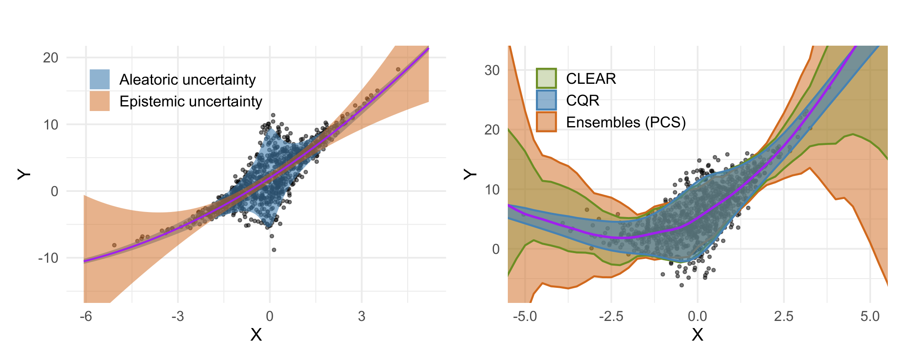
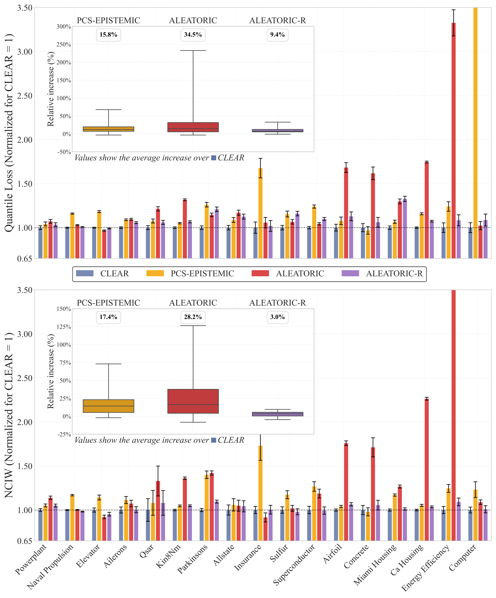

Abstract
Accurate uncertainty quantification is critical for reliable predictive modeling. Existing methods typically address either aleatoric uncertainty due to measurement noise or epistemic uncertainty resulting from limited data, but not both in a balanced manner. We propose CLEAR, a calibration method with two distinct parameters, $\gamma_1$ and $\gamma_2$, to combine the two uncertainty components and improve the conditional coverage of predictive intervals for regression tasks. CLEAR is compatible with any pair of aleatoric and epistemic estimators; we show how it can be used with (i) quantile regression for aleatoric uncertainty and (ii) ensembles drawn from the Predictability–Computability–Stability (PCS) framework for epistemic uncertainty. Across 17 diverse real-world datasets, CLEAR achieves an average improvement of 28.2% and 17.4% in the interval width compared to the two individually calibrated baselines while maintaining nominal coverage. Similar improvements are observed when applying CLEAR to Deep Ensembles (epistemic) and Simultaneous Quantile Regression (aleatoric). The benefits are especially evident in scenarios dominated by high aleatoric or epistemic uncertainty.

Left: Aleatoric uncertainty (blue) reflects irreducible data noise; epistemic uncertainty (red) is large in extrapolation regions with limited training data. Right: CLEAR combines both sources in a data-driven manner, yielding tighter and better-calibrated prediction intervals.
Method
CLEAR constructs prediction intervals by adaptively combining aleatoric (data noise) and epistemic (model) uncertainty through two calibration parameters, $\gamma_1$ and $\lambda$.
Ensures marginal $(1-\alpha)$ coverage for any finite sample via a conformal guarantee. Calibrated on a held-out set.
Balances aleatoric vs. epistemic contribution. Selected on a validation set by minimizing quantile loss.
Works with any pair of aleatoric and epistemic estimators: CQR + PCS, SQR + Deep Ensembles, and more.
Contributions
Results
We benchmark across 17 real-world regression datasets, 10 random splits (60%/20%/20%), and multiple model and estimator variants, at 95% nominal coverage. CLEAR is compared against two individually calibrated baselines: an aleatoric-only approach using Conformalized Quantile Regression (CQR) and an epistemic-only PCS ensemble. Results are reported in Normalized Calibrated Interval Width (NCIW) and quantile loss; lower is better in both.

Quantile loss and NCIW across 17 real-world datasets, averaged over 10 seeds, normalized relative to CLEAR (= 1.0 baseline). Lower is better; error bars show ±1σ. Inset boxplot: average % relative increase over CLEAR. EPISTEMIC = PCS ensemble; ALEATORIC = bootstrapped CQR; ALEATORIC-R = CQR on residuals.
Results also hold with Deep Ensembles + Simultaneous Quantile Regression: CLEAR improves interval width (NCIW) by 28.6% and 13.4% over the two baselines, confirming generalizability beyond PCS + CQR.
Case Study
Data processing can significantly affect the uncertainty. We take the Ames Housing dataset and deliberately vary the feature set to engineer controlled uncertainty regimes. Restricting to the top 2 predictors (originally 80) deprives the model of information, inducing high aleatoric uncertainty. Using all features with richer data processing (PCS pipeline) reduces it and shifts dominance to epistemic uncertainty. CLEAR's $\lambda$ correctly identifies the dominant source in each regime and adjusts accordingly.
| Setting | Method | Width ($) | Coverage |
|---|---|---|---|
| 2 features (high aleatoric) | |||
| PCS | 107,880 | 87% | |
| CQR | 104,741 | 90% | |
| CLEAR | 95,177 | 89% | |
| All features (high epistemic) | |||
| PCS | 57,594 | 89% | |
| CQR | 62,398 | 88% | |
| CLEAR | 55,910 | 88% | |
Target: 90% coverage. CLEAR achieves the best or near-best interval width in both regimes.
Get Started
Citation
@inproceedings{azizi2026clear, title = {{CLEAR}: Calibrated Learning for Epistemic and Aleatoric Risk}, author = {Ilia Azizi and Juraj Bodik and Jakob Heiss and Bin Yu}, booktitle = {The Fourteenth International Conference on Learning Representations}, year = {2026}, url = {https://openreview.net/forum?id=RY4IHaDLik} }